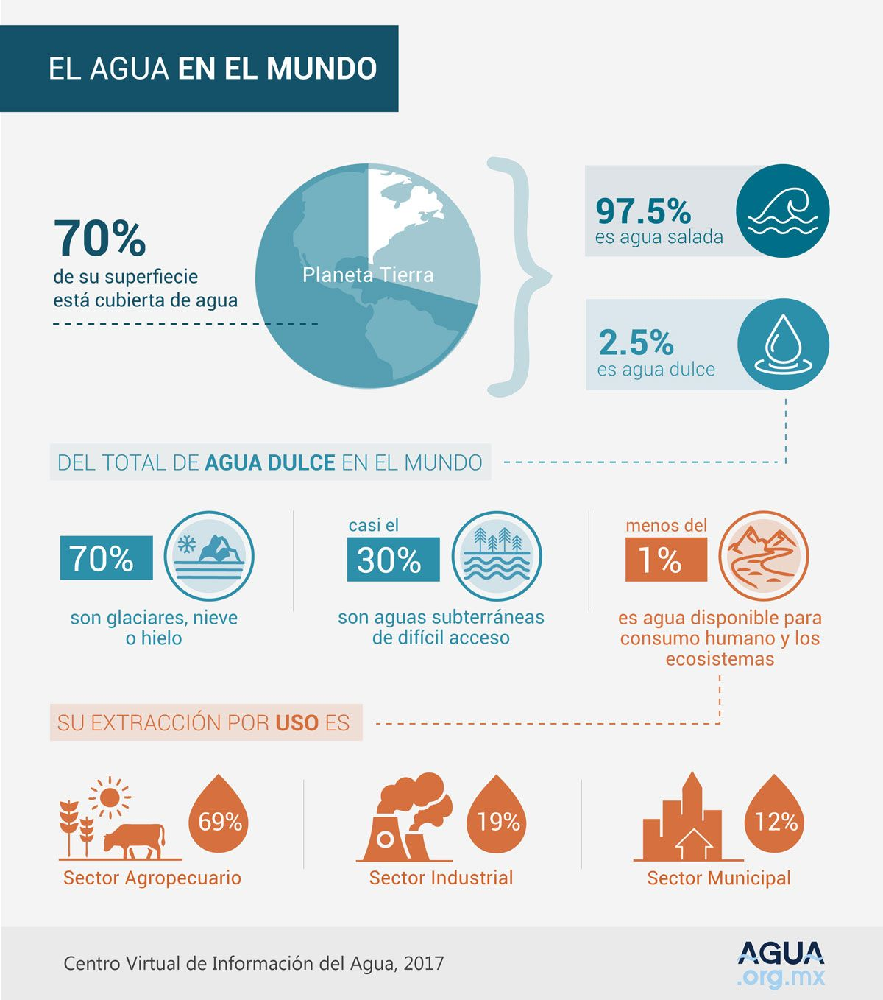
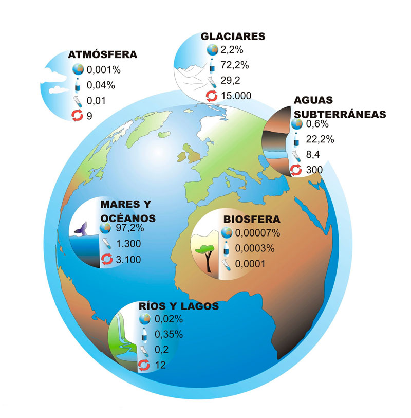
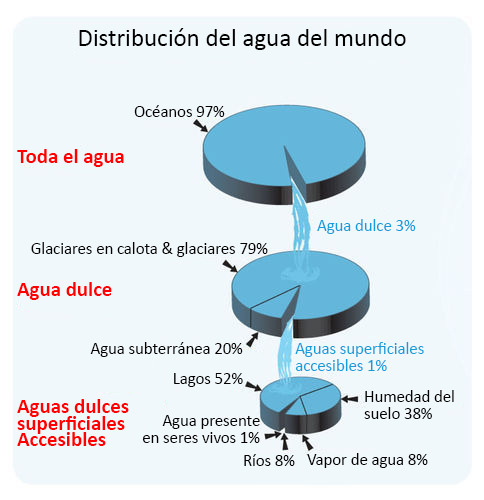
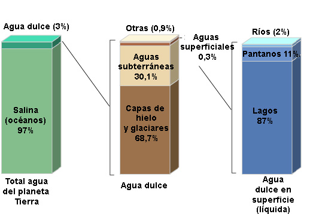
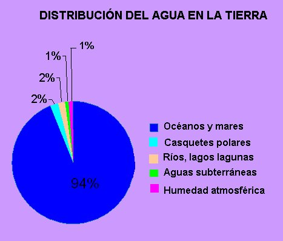
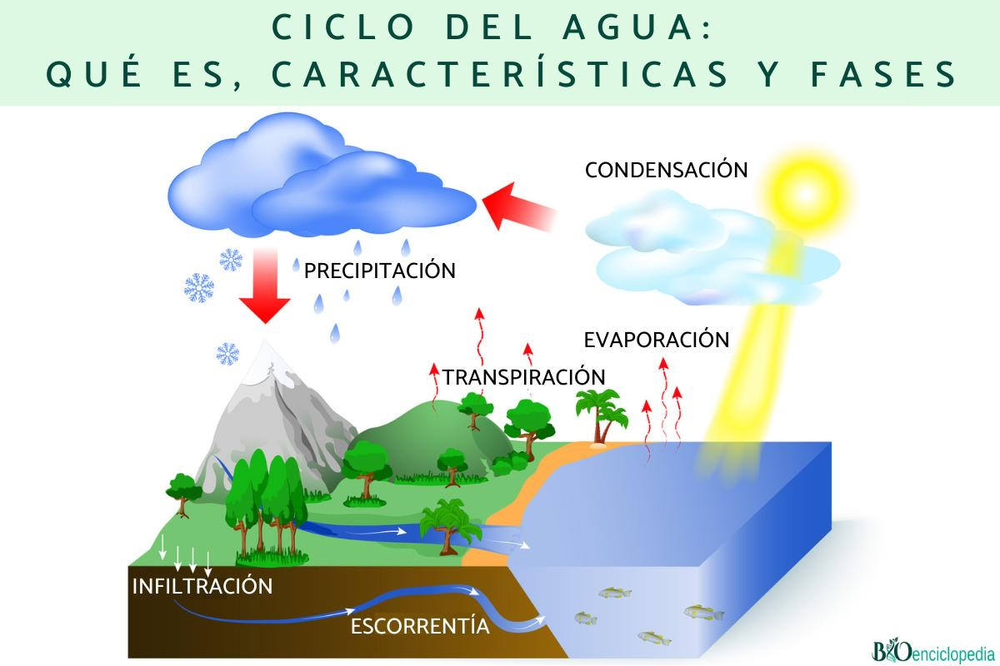
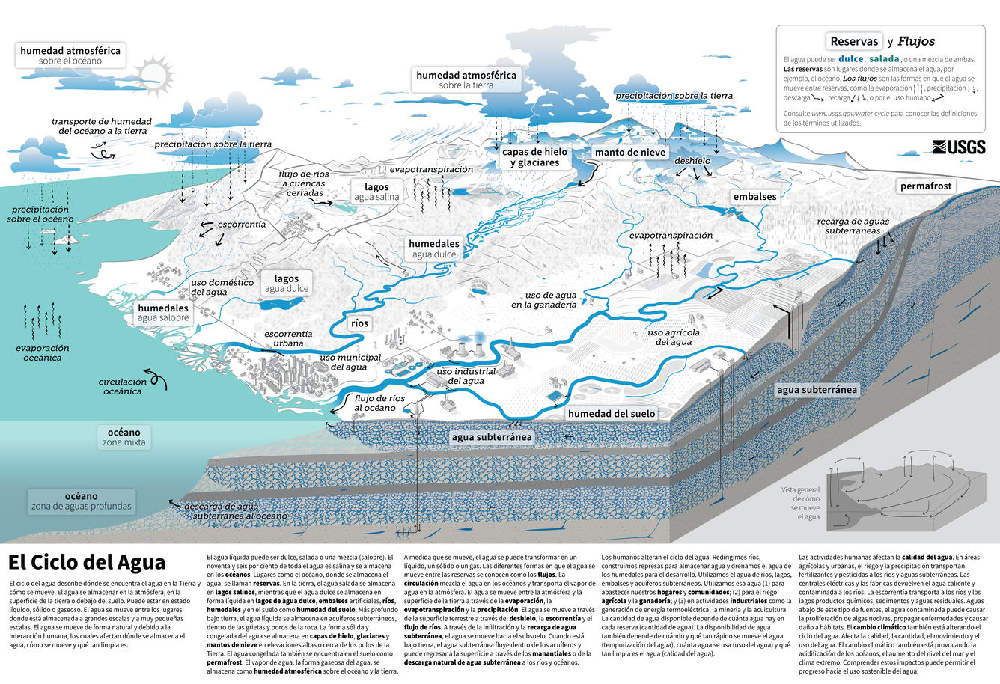
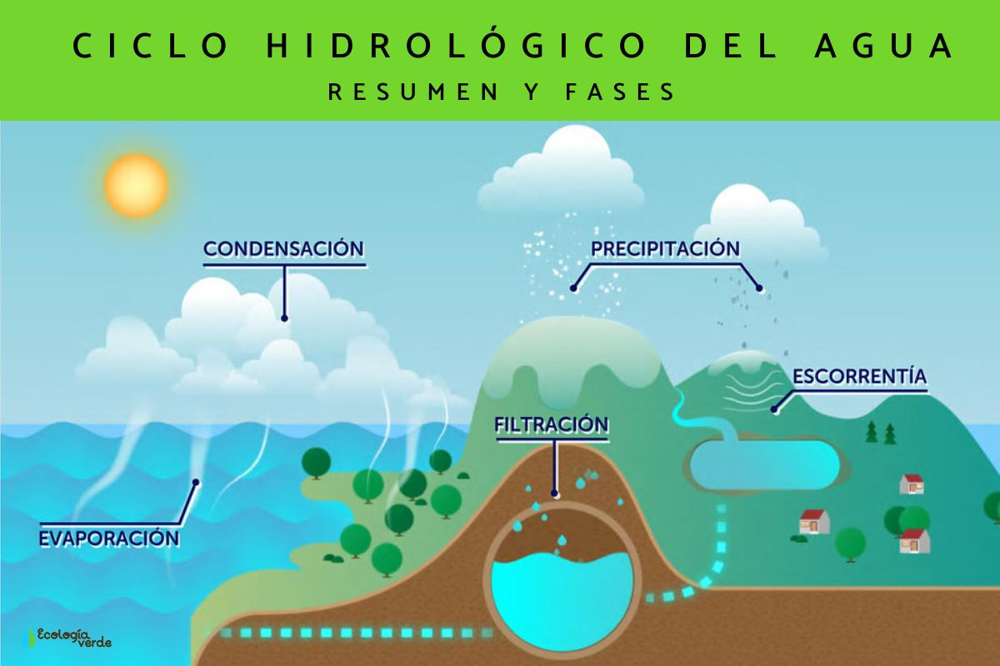
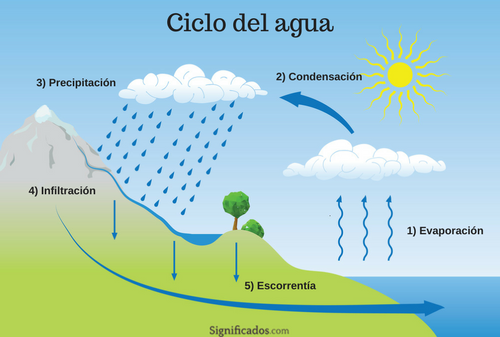

💧 ¿Qué es el Balance Hídrico?
El balance hídrico es el estudio de la distribución, disponibilidad y movimiento del agua en la Tierra. Aunque nuestro planeta es conocido como el "planeta azul" porque el 71% de su superficie está cubierta de agua, la realidad es que solo una fracción mínima de esa agua es dulce y accesible para los seres vivos.
Comprender el balance hídrico es fundamental para entender por qué la escasez de agua es uno de los mayores desafíos del siglo XXI, a pesar de que vivimos en un planeta "lleno de agua". El agua no se pierde, pero su distribución y calidad sí pueden verse gravemente afectadas por la actividad humana y el cambio climático.
🎯 Objetivos de Aprendizaje
Al finalizar este tema serás capaz de: describir la distribución del agua en la Tierra (salada vs. dulce), explicar el porcentaje de agua dulce disponible para consumo humano, identificar las etapas del ciclo del agua (ciclo hidrológico), comprender la importancia del agua subterránea y los glaciares como reservas, y analizar el impacto humano sobre el balance hídrico global.
🌍 El Agua en el Planeta Tierra
La Tierra contiene aproximadamente 1,386 millones de kilómetros cúbicos de agua. Sin embargo, la gran mayoría de esta agua no es apta para el consumo humano ni para la mayoría de los ecosistemas terrestres sin un proceso de desalinización costoso y energéticamente intensivo.

Figura 1: El agua en el mundo — distribución entre agua salada y dulce, y uso por sectores. Fuente: Agua.org.mx.

Figura 2: Distribución porcentual del agua en los diferentes reservorios del planeta. Fuente: Aquabook.
La Paradoja del Agua Dulce
De ese 2.5% de agua dulce, la mayor parte está inaccesible para el consumo humano directo:
📊 Distribución del Agua Dulce en la Tierra
68.7% → Glaciares, casquetes polares y nieve permanente
30.1% → Aguas subterráneas (acuíferos profundos)
1.2% → Aguas superficiales y otros reservorios accesibles
De ese 1.2% accesible, más de la mitad está en lagos lejanos, humedales o ríos de difícil acceso.

Figura 3: Distribución del agua del mundo en gráficos de torta anidados. Fuente: CK-12 Foundation.

Figura 4: Distribución del agua dulce: glaciares (68.7%), aguas subterráneas (30.1%), superficiales (1.2%). Fuente: RED PROTEJO.

Figura 5: Distribución del agua en la Tierra en gráfico circular. Fuente: Geografía General.
¿Sabías que...?
Si toda el agua de la Tierra cabiera en un balde de 100 litros, solo 2.5 litros serían dulces. De esos 2.5 litros, casi 1.7 litros estarían congelados en glaciares, 0.75 litros serían agua subterránea profunda e inaccesible, y solo una cucharadita (unos 30 ml) sería agua dulce superficial accesible en ríos, lagos y humedales.
🚰 Agua Dulce Disponible: Menos de lo que Parece
Aunque el 2.5% de agua dulce suena como una cantidad razonable, la realidad es mucho más alarmante. Solo aproximadamente el 0.4% del agua total del planeta es agua dulce superficial (ríos, lagos, embalses) o subterránea somera realmente accesible para el consumo humano.
Reservorios de Agua Dulce
🏔️ Glaciares y Casquetes Polares
Almacenan el 68.7% del agua dulce. La Antártida y Groenlandia concentran la mayor parte. El deshielo acelerado por el cambio climático libera agua, pero también reduce reservas a largo plazo.
🕳️ Aguas Subterráneas (Acuíferos)
Contienen el 30.1% del agua dulce. Algunos acuíferos son "no renovables" (agua fósil) porque tardan miles de años en recargarse. El sobrebombeo causa hundimiento del suelo.
🏞️ Lagos y Embalses
Representan ~0.26% del agua dulce. El lago Baikal (Rusia) contiene el 20% del agua dulce líquida superficial del mundo. Los embalses artificiales modifican ecosistemas.
🌊 Ríos y Humedales
Solo ~0.006% del agua total. Aunque parece poco, los ríos son la principal fuente de agua para ciudades. Los humedales actúan como filtros naturales y reguladores de inundaciones.
⚠️ La Crisis del Agua en Números
2,200 millones de personas no tienen acceso a agua potable gestionada de forma segura.
4,000 millones de personas experimentan escasez de agua al menos un mes al año.
Para 2050, se proyecta que el 50% de la población mundial vivirá en zonas con escasez de agua.
El 70% del agua dulce extraída se usa en agricultura, el 19% en industria y el 11% en uso doméstico.
¿Sabías que...?
El acuífero Guaraní, compartido por Argentina, Brasil, Paraguay y Uruguay, es uno de los mayores reservorios de agua subterránea del mundo, con un volumen estimado de 45,000 km³ de agua dulce. Sin embargo, en muchas zonas se está extrayendo más agua de la que se recarga naturalmente.
🔄 El Ciclo del Agua (Ciclo Hidrológico)
El ciclo del agua o ciclo hidrológico es el proceso continuo mediante el cual el agua circula entre la atmósfera, la superficie terrestre y el subsuelo. Es un ciclo cerrado: no se crea ni se destruye agua, solo cambia de estado y de ubicación. Este ciclo es impulsado principalmente por la energía solar y la gravedad.

Figura 6: El ciclo del agua con sus principales fases: evaporación, transpiración, condensación, precipitación, infiltración y escorrentía. Fuente: Ecología Verde.

Figura 7: El Ciclo del Agua — diagrama completo con reservas, flujos y procesos en español. Fuente: USGS (Servicio Geológico de EE.UU.).

Figura 8: Ciclo hidrológico del agua — resumen y fases principales. Fuente: Ecología Verde.

Figura 9: Ciclo del agua en 5 etapas numeradas. Fuente: Significados.com.
Etapas del Ciclo del Agua
☀️ Evaporación
El calor del sol transforma el agua líquida de océanos, mares, lagos y ríos en vapor de agua (gas). Este proceso consume energía y enfría la superficie. La evaporación es el motor principal del ciclo hidrológico.
🌿 Transpiración
Las plantas absorben agua por sus raíces y la liberan al aire a través de los estomas de sus hojas. La transpiración vegetal aporta aproximadamente el 10% del vapor de agua atmosférico. Junto con la evaporación del suelo, se conoce como evapotranspiración.
☁️ Condensación
Al ascender, el vapor de agua se enfría y se transforma en pequeñas gotas líquidas o cristales de hielo, formando nubes. La condensación libera calor (calor latente) al ambiente. Sin condensación, no habría nubes ni precipitación.
🌧️ Precipitación
Cuando las gotas de agua en las nubes crecen suficientemente, caen por gravedad en forma de lluvia, nieve, granizo o llovizna. La precipitación es el mecanismo principal de recarga de agua dulce en la superficie terrestre.
🌱 Infiltración
Parte del agua de lluvia se filtra en el suelo, recargando los acuíferos subterráneos. La infiltración depende del tipo de suelo, la pendiente del terreno y la vegetación. Los bosques y humedales favorecen la infiltración.
🏔️ Escorrentía y Almacenamiento
El agua que no se infiltra fluye por la superficie formando ríos, arroyos y lagos, o se acumula en glaciares y casquetes polares. Parte retorna directamente a los océanos, completando el ciclo. El tiempo de residencia varía: días en ríos, años en lagos, miles de años en acuíferos profundos.
¿Sabías que...?
Una molécula de agua tarda en promedio 9 días en evaporarse de un océano, 9 días en viajar como vapor atmosférico, y 10 días en precipitar y retornar al océano. Sin embargo, una molécula puede quedar atrapada en un glaciar durante miles de años o en un acuífero profundo durante centurias.
🌎 Importancia del Ciclo Hidrológico
El ciclo del agua no es solo un proceso físico: es el sustento de la vida en la Tierra. Sin él, no existirían los climas, los ecosistemas ni la civilización humana tal como la conocemos.
🟢 Funciones Ecológicas
- Regulación térmica: El agua absorbe y libera calor lentamente, moderando las temperaturas globales.
- Transporte de nutrientes: El agua disuelve y distribuye minerales esenciales por los ecosistemas.
- Hábitat: Los cuerpos de agua albergan el 50% de la biodiversidad del planeta.
- Formación de suelos: La erosión hídrica modela paisajes y crea suelos fértiles.
- Recarga de acuíferos: Mantiene disponible agua subterránea para sequías.
🔵 Funciones para la Humanidad
- Abastecimiento: El agua es esencial para beber, cocinar y higiene.
- Agricultura: El 70% del agua dulce extraída se usa para riego.
- Industria: Refrigeración, procesos de manufactura y generación de energía.
- Generación eléctrica: Hidroelectricidad representa el 16% de la electricidad mundial.
- Transporte: Ríos y canales han sido rutas comerciales desde la antigüedad.
🌧️ El Ciclo del Agua y el Clima
El ciclo del agua está íntimamente ligado al cambio climático. Un aumento de la temperatura global acelera la evaporación, lo que intensifica el ciclo: más vapor de agua en la atmósfera produce precipitaciones más extremas (inundaciones en algunas zonas) y sequías más severas en otras. El vapor de agua es, de hecho, el principal gas de efecto invernadero de la atmósfera, aunque su efecto es natural y autorregulado.
⚠️ Impacto Humano sobre el Balance Hídrico
La actividad humana ha alterado drásticamente el balance hídrico natural en las últimas décadas. La contaminación, la deforestación, la urbanización y el cambio climático están poniendo en riesgo la disponibilidad y calidad del agua dulce en todo el mundo.
| Problema | Causa | Consecuencia |
|---|---|---|
| Contaminación de ríos y lagos | Vertido de residuos industriales, agrícolas y domésticos sin tratamiento | Agua no potable, muerte de ecosistemas acuáticos, enfermedades |
| Sobreexplotación de acuíferos | Extracción de agua subterránea superior a la recarga natural | Agotamiento de reservas, hundimiento del suelo, salinización |
| Deforestación | Tala de bosques para agricultura y urbanización | Reducción de transpiración, erosión, menor infiltración, inundaciones |
| Urbanización impermeable | Construcción de calles y edificios que impiden la infiltración | Aumento de escorrentía, reducción de recarga de acuíferos, inundaciones |
| Cambio climático | Emisiones de gases de efecto invernadero | Deshielo de glaciares, alteración de patrones de precipitación, sequías |
| Construcción de represas | Embalses para generación eléctrica y control de inundaciones | Alteración de ecosistemas fluviales, sedimentación, migración de peces |
🟢 Acciones para Proteger el Agua
- Tratamiento de aguas residuales: Evitar vertidos directos a ríos y mares.
- Riego eficiente: Técnicas de gotero y aspersión para reducir desperdicio agrícola.
- Reforestación: Plantar árboles en cuencas hidrográficas para mejorar infiltración.
- Captación de lluvia: Sistemas de recolección de agua pluvial en hogares y edificios.
- Educación: Conciencia sobre el uso responsable del agua desde la escuela.
🔵 Tecnologías Emergentes
- Desalinización: Conversión de agua de mar en agua dulce (costosa pero creciente).
- Reutilización de agua: Tratamiento de aguas grises para riego e industria.
- Inteligencia artificial: Predicción de sequías y optimización de redes de distribución.
- Nanotecnología: Filtros de grafeno para purificación de agua a bajo costo.
- Agrovoltaica: Paneles solares sobre cultivos que reducen evapotranspiración.
¿Sabías que...?
El lago Maracaibo en Venezuela es uno de los lagos más grandes de América del Sur, pero su eutrofización (exceso de nutrientes) y la contaminación por derrames petroleros han degradado gravemente su calidad hídrica. En contraste, el Parque Nacional Canaima alberga ríos de agua cristalina (como el Carrao) que son considerados entre los más puros del mundo gracias a la protección de su cuenca.
🇻🇪 El Agua en Venezuela
Venezuela posee una de las mayores reservas de agua dulce de América Latina gracias a su red hidrográfica extensa, sus embalses y su ubicación en la zona intertropical con abundantes precipitaciones. Sin embargo, la gestión y distribución del agua enfrentan serios desafíos.
🌊 Recursos Hídricos Venezolanos
Río Orinoco: 2,140 km de longitud, la tercera cuenca más grande de Sudamérica. Drena el 80% del territorio venezolano.
Río Caroní: Afluente del Orinoco, con aguas de color té debido a taninos de la selva. Alimenta la represa del Guri (segunda más grande del mundo en su tipo).
Lago de Valencia: El lago endorreico más grande de Venezuela, gravemente eutrofizado por contaminación.
Embalse del Guri: Con una capacidad de 138,000 millones de m³, genera más del 60% de la electricidad del país.
Salto Ángel (Kerepakupai Merú): La cascada más alta del mundo (979 m), alimentada por lluvias tropicales constantes.
¿Sabías que...?
Venezuela recibe en promedio 2,000 mm de precipitación anual (más del doble del promedio mundial de 990 mm), lo que la convierte en uno de los países con mayor disponibilidad hídrica per cápita. Sin embargo, la distribución desigual y la infraestructura deteriorada hacen que millones de personas no tengan acceso regular a agua potable en sus hogares.
🤯 Datos Curiosos sobre el Agua
¿Sabías que...?
El agua más antigua jamás encontrada en la Tierra tiene 2,000 millones de años y fue descubierta en una mina de Ontario, Canadá. Estaba atrapada en rocas subterráneas y contiene microbios que vivieron cuando la Tierra era muy diferente a hoy.
¿Sabías que...?
Tu cuerpo está compuesto aproximadamente por 60% de agua. El cerebro y el corazón son ~73% agua, los pulmones ~83%, y hasta los huesos contienen ~31% de agua. Un humano puede sobrevivir solo 3 días sin agua, pero hasta 3 semanas sin comida.
¿Sabías que...?
El agua pesada (óxido de deuterio, D₂O) es un tipo de agua donde el hidrógeno normal se reemplaza por deuterio (un isótopo pesado). No es tóxica en pequeñas cantidades, pero beberla en grandes volúmenes sería letal porque afecta la división celular. Se usa en reactores nucleares como moderador.
¿Sabías que...?
La gotita más pequeña de agua que puede existir contiene aproximadamente 100 millones de moléculas de H₂O. A escala molecular, el agua es una ciudad enorme. Además, el agua es una de las pocas sustancias que se expande al congelarse, lo que permite que la vida exista bajo hielo flotante: si el hielo fuera más denso que el agua líquida, los océanos se congelarían desde el fondo.
📝 Verifica tu Aprendizaje
Responde estas preguntas para comprobar lo que has aprendido. (Las respuestas se mostrarán al hacer clic)